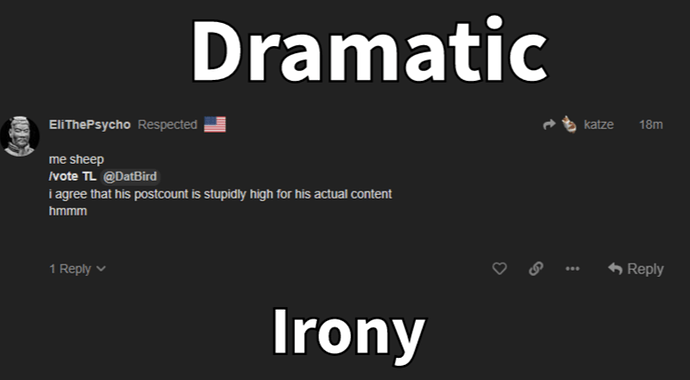

Jane !!!
Lol (no clue)
Gorta !!!
I think the second part of 643 is villagery because he’s been known to wolfread that before.
1095 is realistically pretty villagery because it subtly says ‘sulit good wim as wolf d1’ without outright relying on meta which feels like something he picked up on and spit out from his memory vs. specifically sought out to fake.
Wish we had more but it’s >>rand v.
Apprentice (Ignoring YBW for now!!!)
I’m going to ignore the openwolf, he did this exact thing in wwfm and i’d rather not try to read into it.
Liked the marl read in 1479 but can’t really say it’s villagery.
All of his posts are, like, p solid but I can’t say they’re anything out of the realm of fakeability? GTHHHH villager but it’s absolutely nully mc nulllnull
Zone !!!
Ya no fuckin clue on this one gonna be honest
Mist !!!
Grr
Really can’t make a ton out of her posts, it’s nothing strikingly obvtown. I’m gonna pull a classic and go with ‘Mist doesn’t have that that her villa game usually has’. Cooould be because of gimmick but even without gimmick it feels like she’s just putting reads in thread and doing absolutely nothing with them. She was a lot more confident and sassy in GW smalltown, here it feels less that.
Realistically closeish to null but proooobably wolf tbhtbh. Don’t take this as ‘marshal wolfreading mistyx to get ez read’ cuz I don’t want to put her through that nor do I have the energy to.
Marl !!!
Brah idfk anymore. There’s a collection of posts that if I squint at I can think are villagery but i think that’s disgusting to townread marl for. I’m gonna just drop dis one at null too. Ez.
Pls don’t throw me out as a d1 tho I’ve literally just shitposted all game cuz I have had no time to intensively read until now
Min !!!
Fight with arctic probably just out of wolfrange tbh. # of and level of reads early was good, would prefer if they did anything else but realistically I don’t really see min getting this pissed at arctic in any wolf scenario? There seems to be very genuine indignation at the wolfread at them and their hatred of the perceived hypocrisy they get from arctic is not a way a wolf who’s mad at being wolfread channels that.
Town asf. Kill me if min ever flips wolf, this is 100% the read i’d make on a partner as w/w and you’d be bad not to.
(Min if ur reading this pls do make reads so I don’t take this back before EoD)
Wind !!!
S T R A T E G I C A L L Y ignoring this slot in this post for reasons that I’m literally never going to explain in my entire lifetime. I will take it to the grave. Not a soul will know why. You can only guess
TL !!!
Nooooot able to clear TL here. Posting is aiiiiiight but there’s no ™ and the reads are all more or less surface level. P sure TL was delirious for a few posts so Imma be nice and slapp down a null on the slot
Eli !!!

Uhhh realisticcally I don’t actually think he’s super wolfy? He’s sorta subdued here yah but there are a few sequences that I thought were townie 1545 is one.
I think 1548 is a post that would get him insta-ITA’d in a mash but isn’t actually that wolfy.
IDK man he’s an LHF that town’s gonna make an excuse to kill unless I sheild and there’s not enough to sheild. I wouldn’t touch d1. Think he’ll be capable of a good amount more later down the line. Givin small townlean rn 4 da creds
Min
Gorta
Eli
App
Marl
Wind
Zone
TL
Mist
Ranking lowposters. Big group of 4 is null. TL and mist aren’t actaully that far from null.

 .
.